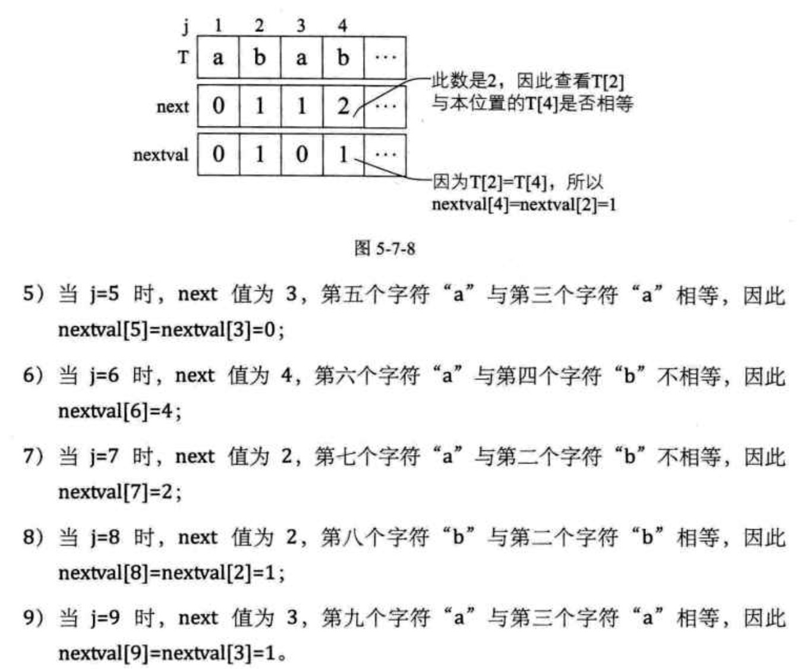

《大话数据结构》学习
《大话数据结构》学习之五：串
5. 串
5.1. 开场白
5.2. 串的定义
串：串（string）是由零个或多个字符组成的有限序列，又名叫字符串。
零个字符的串称为空串（nullstring）。
空格串，是只包含空格的串。空格串是有内容有长度的，而且可以不止一个空格。
串中任意个数的连续字符组成的子序列称为该串的子串，相应地，包含子串的串称为主串。子串在主串中的位置就是子串的第一个字符在主串中的序号。
5.3. 串的比较
串的比较是通过组成串的字符之间的编码来进行的，而字符的编码指的是字符在对应字符集中的序号。
计算机中的常用字符是使用标准的 ASCII 编码，由 7 位二进制数表示一个字符，总共可以表示 128 个字符，后来扩展 ASCII 码由 8 位二进制数表示一个字符，总共可以表示 256 个字符。
Unicode 编码，由 16 位的二进制数表示一个字符，这样总共就可以表示 个字符，约是 6.5 万多个字符，为了和 ASCII 码兼容，Unicode 的前 256 个字符与 ASCII 码完全相同。
在 C 语言中比较两个串是否相等，必须是它们串的长度以及它们各个对应位置的字符都相等时，才算是相等。
两个串不相等时，判定大小：
给定两个串：，，当满足以下条件之一时，：
- ，且 。例如当 ，就有 。因为 比 多出了两个字母。
- 存在某个 ，使得 。例如当 ，因为两串的前 4 个字母均相同，而两串第 5 个字母（ 值），字母 是 ASCII 码是 101，而字母 的 ASCII 码是 121，显然 ，所以 。
5.4. 串的抽象数据类型
线性表更关注的是单个元素的操作，比如查找一个元素，插入或删除一个元素，但串中更多的是查找子串位置、得到指定位置子串、替换子串等操作。
ADT 串（string）
Data
串中元素仅由一个字符组成，相邻元素具有前驱和后继关系。
Operation
StrAssign(T, *chars);//生成一个其值等于字符串常量chars的串T。
StrCopy(T, S);//串S存在，由串S复制得串T。
ClearString(S);//串S存在，将串清空
StringEmpty(S);//若S为空，返回true，否则返回flase。
StrLength(S);//返回串S的元素个数，即串的长度。
StrCompare(S, T);//若S>T，返回值>0；若S=T，返回0；若S<T，返回值<0。
Concat(T, S1, S2);//用T返回有S1和S2联接而成的新串。
SubString(Sub, S, pos, len);//串S存在，1<=pos<=StrLength(S)，且0<=len<=Length(S)-pos+1；
//用串S的第pos个字符起长度为len的子串。
Index(S, T, pos);//串S和T存在，T是非空串，1<=pos<=StrLength(S)。若主串S中存在和串T值相同的子串，
//则返回它在主串S中第pos个字符之后第一次出现的位置，否则返回0。
Replace(S, T, V);//串S、T和V存在，T是非空串。用V替换主串S中出现的所有与T相等的不重叠的子串。
StrInsert(S, pos, T);//串S和T存在，1<=pos<=StrLength(S)+1。在串S的第pos个字符之前插入串T。
StrDelete(S, pos, len);//串S存在，1<=pos<=StrLength(S)-len+1。从串S中删除第pos个字符起长度为len的子串。
endADT
对于不同的高级语言，对串的基本操作会有不同的定义方法。
5.5. 串的存储结构
串的存储结构与线性表相同，分为两种。
5.5.1. 串的顺序存储结构
串的顺序存储结构是用一组地址连续的存储单元来存储串中的字符序列。 按照预定义的大小，为每个定义的串变量分配一个固定长度的存储区。一般是用定长数组来定义。
一般可以将实际的串长度值保存在数组 0 的下标位置，有的书中也会定义存储在数组的最后一个下标位置。但也有些编程语言规定在串值后面加一个不计入串长度的结束标记字符，比如 \0 来表示串值的终结。

串值的存储空间可在程序执行过程中动态分配而得。比如在计算机中存在一个自由存储区，叫做“堆”。这个堆可由语言的动态分配函数 malloc() 和 free() 来管理。
5.5.2. 串的链式存储结构
由于串结构的特殊性，结构中的每个元素数据是一个字符，如果也简单的应用链表存储串值，一个结点对应一个字符，就会存在很大的空间浪费。因此，一个结点可以存放一个字符，也可以考虑存放多个字符，最后一个结点若是未被占满时，可以用 # 或其他非串值字符补全。
当然，这里一个结点存多少个字符才合适就变得很重要，这会直接影响着串处理的效率，需要根据实际情况作出选择。
串的链式存储结构除了在连接串与串操作时有一定方便之外，总的来说不如顺序存储灵活，性能也不如顺序存储结构好。
5.6. 朴素的模式匹配算法
子串的定位操作通常称做串的模式匹配。
假如我们要从主串 S="goodgoogle" 中，找到 T="google" 这个子串的位置：
- 主串 第一位开始， 与 前三个字母都匹配成功，但 第四个字母是 而 的是 。第一位匹配失败。其中竖直连线表示相等，闪电状弯折连线表示不等。
- 主串 第二位开始，主串 首字母是 ，要匹配的 首字母是 ，匹配失败。
- 主串 第三位开始，主串 首字母是 ，要匹配的 首字母是 ，匹配失败。
- 主串 第四位开始，主串 首字母是 ，要匹配的 首字母是 ，匹配失败。
- 主串 第五位开始， 与 ，6 个字母全匹配，匹配成功。
简单的说，就是对主串的每一个字符作为子串开头，与要匹配的字符串进行匹配。对主串做大循环，每个字符开头做 的长度的小循环，直到匹配成功或全部遍历完成为止。
考虑不用串的其他操作，而是只用基本的数组来实现同样的算法 Index。假设主串 和 要匹配的子串 的长度存在 与 中。实现代码如下：
/* 返回子串T在主串S中第pos个字符之后的位置。若不存在，则函数返回值为0。 */ /* T非空，1≤pos≤StrLength(S)。 */ int Index(String S, String T, int pos) { /* i用于主串S中当前位置下标，若pos不为1, 则从pos位置开始匹配 */ int i = pos; /* j用于子串T中当前位置下标值 */ int j = 1; /* 若i小于S长度且j小于T的长度时循环 */ while (i <= S[0] && j <= T[0]) /* S[0],T[0]储存着当前串的长度 */ { /* 两字母相等则继续 */ if (S[i] == T[j]) { ++i; ++j; } /* 指针后退重新开始匹配 */ else { /* i退回到上次匹配首位的下一位 */ i = i - j + 2; /* j退回到子串T的首位 */ j = 1; } } if (j = T[0]) return i - T[0]; else return 0; }
最好的情况是一开始就区配成功，比如 “googlegood” 中去找 “google”，时间复杂度为 。
稍差一些，如果像刚才例子中第二、三、四位一样，每次都是首字母就不匹配，那么对T串的循环就不必进行了，比如 “abcdef-google” 中去找 “google”。那么时间复杂度为 。 为主串长度， 为要匹配的子串长度。根据等概率原则，平均是 次查找，时间复杂度为 。
最坏的情况是每次不成功的匹配都发生在串 的最后一个字符。如主串 ，而要匹配的子串为 ，前者是有 49 个 "0" 和 11 个 "1" 的主串，后者是 9 个 "0" 和 1 个 "1" 的子串。在匹配时，每次都得将 中字符循环到最后一位才发现不匹配的。这样等于 串需要在 串的前 40 个位置都需要判断 10 次，并得出不匹配的结论。
直到最后第 41 个位置，因为全部匹配相等，所以不需要再继续进行下去。
如果最终没有可匹配的子串，比如是 ，到了第 41 位置判断不匹配后同样不需要继续比对下去。因此最坏情况的时间复杂度 。
在计算机的运算中，模式匹配操作可说是随处可见，而刚才这个算法，就显得太低效了。
5.7. KMP模式匹配算法
5.7.1. KMP 模式匹配算法原理
5.7.2. next数组值推导
5.7.3. KMP模式匹配算法实现
/* 通过计算返回子串T的next数组。 */ void get_next(String T, int *next) { int i,j; i=1; j=0; next[1]=0; while (i<T[0]) /* 此处T[0]表示串T的长度 */ { if(j==0 || T[i]== T[j]) /* T[i]表示后缀的单个字符，T[j]表示前缀的单个字符 */ { ++i; ++j; next[i] = j; } else j= next[j]; /* 若字符不相同，则j值回溯 */ } }
这段代码的目的就是为了计算出当前要匹配的串 的 next 数组。
/* 返回子串T在主串S中第pos个字符之后的位置。若不存在，则函数返回值为0。 */ /* T非空，1≤pos≤StrLength(S)。 */ int Index_KMP(String S, String T, int pos) { int i = pos; /* i用于主串S中当前位置下标值，若pos不为1，则从pos位置开始匹配 */ int j = 1; /* j用于子串T中当前位置下标值 */ int next[255]; /* 定义一next数组 */ get_next(T, next); /* 对串T作分析，得到next数组 */ while (i <= S[0] && j <= T[0]) /* 若i小于S的长度并且j小于T的长度时，循环继续 */ { if (j==0 || S[i] == T[j]) /* 两字母相等则继续，与朴素算法增加了j=0判断 */ { ++i; ++j; } else /* 指针后退重新开始匹配 */ j = next[j];/* j退回合适的位置，i值不变 */ } if (j > T[0]) return i-T[0]; else return 0; }
5.7.4. KMP模式匹配算法改进
对求 next 函数进行了改良。假设取代的数组为 nextval，代码如下：
/* 求模式串T的next函数修正值并存入数组nextval */ void get_nextval(String T, int *nextval) { int i,j; i=1; j=0; nextval[1]=0; while (i<T[0]) /* 此处T[0]表示串T的长度 */ { if(j==0 || T[i]== T[j]) /* T[i]表示后缀的单个字符，T[j]表示前缀的单个字符 */ { ++i; ++j; if (T[i]!=T[j]) /* 若当前字符与前缀字符不同 */ nextval[i] = j; /* 则当前的j为nextval在i位置的值 */ else nextval[i] = nextval[j]; /* 如果与前缀字符相同，则将前缀字符的 */ /* nextval值赋值给nextval在i位置的值 */ } else j= nextval[j]; /* 若字符不相同，则j值回溯 */ } }
实际匹配算法，只需要将 get_next(T,next); 改为 get_nextval(T,next); 即可。
5.7.5. nextval数组值推导

总结改进过的 KMP 算法，它是在计算出 next 值的同时，如果 a 位字符与它 next 值指向的 b 位字符相等，则该 a 位的 nextval 就指向 b 位的 nextval 值，如果不等，则该 a 位的 nextval 值就是它自己 a 位的 next 的值。